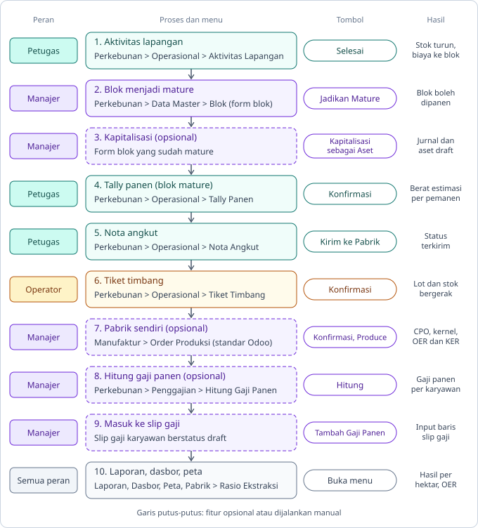
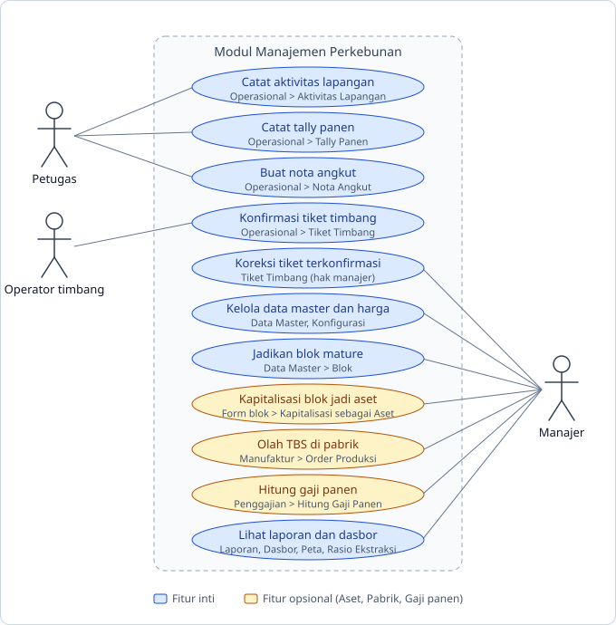

Panduan alur modul untuk belajar dan demo: dari blok sampai laporan, lengkap dengan hasil yang dibuat sistem di tiap proses. Pilih tab untuk melihat tiap langkah.
| 1 | Pengaturan dan data master | Perkebunan > Konfigurasi > Pengaturan, lalu Perkebunan > Data Master |
| 2 | Blok (belum menghasilkan) | Perkebunan > Data Master > Blok |
| 3 | Aktivitas lapangan | Perkebunan > Operasional > Aktivitas Lapangan |
| 4 | Jadikan Mature dan kapitalisasi | Form blok: tombol Jadikan Mature, lalu Kapitalisasi sebagai Aset |
| 5 | Tally panen | Perkebunan > Operasional > Tally Panen |
| 6 | Nota angkut | Perkebunan > Operasional > Nota Angkut |
| 7 | Tiket timbang | Perkebunan > Operasional > Tiket Timbang |
| 8 | Pabrik sendiri (opsional) | Manufaktur > Order Produksi (aplikasi standar Odoo); hasil dibaca di Perkebunan > Pabrik > Rasio Ekstraksi |
| 9 | Gaji panen | Perkebunan > Penggajian > Hitung Gaji Panen, lalu slip gaji |
| 10 | Laporan, peta, dasbor | Perkebunan > Laporan > Hasil dan Biaya; Dasbor; Peta |
Keterangan hasil: Data data modul Stok pergerakan stok Akuntansi jurnal, aset, biaya SDM gaji
Alur kerja per peran, lengkap dengan menu, tombol, dan hasil tiap langkah.

Peran pengguna dan use case yang dikerjakan, beserta menunya.

Perkebunan > Konfigurasi > Pengaturan, lalu Perkebunan > Data Master
Yang dilakukan
Isi sekali di awal. Tanpa ini, konfirmasi tiket timbang dan aktivitas akan gagal.
Yang dihasilkan sistem
DataPengaturan perusahaan: gudang penerima, produk TBS, lokasi panen kebun, lokasi konsumsi, produk CPO dan kernel.
DataData master: Kebun, Divisi (isi gudang input), Jenis Aktivitas, Potongan Mutu, Harga Referensi TBS.
Aturan dan batasan
Tips demo: Siapkan 1 kebun, 1 divisi, 1 blok, 1 pemanen, dan stok pupuk di gudang divisi sebelum demo.
Perkebunan > Data Master > Blok
Yang dilakukan
Buat blok baru: kode, luas, tahun tanam, berat rata-rata tandan (BJR), dan batas peta.
Yang dihasilkan sistem
DataBlok dengan tahap Belum Menghasilkan (TBM).
AkuntansiAkun analitik otomatis untuk blok, tempat semua biaya blok dikumpulkan.
DataBatas poligon (GeoJSON) tampil di menu Peta. Luas dari gambar hanya saran, tidak menimpa luas blok.
Aturan dan batasan
Tips demo: Buka menu Peta untuk menunjukkan blok yang diwarnai menurut tahap.
Perkebunan > Operasional > Aktivitas Lapangan
Yang dilakukan
Isi tanggal, blok, jenis kerja, pekerja, dan baris input (produk dan jumlah). Klik Selesai.
Yang dihasilkan sistem
StokSatu pergerakan stok selesai per baris input: dari gudang divisi ke lokasi konsumsi, ditandai dengan blok.
AkuntansiBiaya stok masuk ke akun analitik blok (dasar biaya per hektar).
DataAktivitas terkunci. Batal membuat pergerakan stok balik, stok kembali ke gudang.
Aturan dan batasan
Tips demo: Pakai 20 kg pupuk: tunjukkan stok gudang turun dari 50 ke 30, lalu buka biaya blok.
Form blok: tombol Jadikan Mature, lalu Kapitalisasi sebagai Aset
Yang dilakukan
Jadikan Mature saat pohon mulai berbuah. Setelah itu wizard kapitalisasi dijalankan manual.
Yang dihasilkan sistem
DataTahap blok menjadi Menghasilkan (TM), tanggal mature terisi, blok boleh dipanen.
AkuntansiWizard membuat satu jurnal (debit akun aset dengan analitik blok, kredit akun lawan) sebesar total biaya blok.
AkuntansiSatu aset (account.asset) draft yang tertaut ke blok, siap disusutkan setelah divalidasi.
Aturan dan batasan
Tips demo: Tunjukkan bahwa nilai awal di wizard sama dengan total biaya blok.
Perkebunan > Operasional > Tally Panen
Yang dilakukan
Satu lembar per divisi per hari. Tiap baris: blok, pemanen, tandan matang, mentah, lewat matang, dan brondolan. Klik Konfirmasi.
Yang dihasilkan sistem
DataLembar tally terkonfirmasi dan terkunci.
DataBerat estimasi tiap baris = (matang + lewat matang) x BJR + brondolan.
DataTanggal panen terakhir blok diperbarui.
Aturan dan batasan
Tips demo: Contoh: BJR 18, 100 matang, 10 lewat matang, 25 kg brondolan menghasilkan 2.005 kg.
Perkebunan > Operasional > Nota Angkut
Yang dilakukan
Isi divisi, plat, sopir, waktu panen paling awal, dan jumlah tandan per blok. Klik Kirim ke Pabrik.
Yang dihasilkan sistem
DataNota berstatus terkirim, dengan total tandan dan berat estimasi.
DataSaat tiket timbang dikonfirmasi, nota otomatis menjadi ditimbang.
Aturan dan batasan
Tips demo: Tautkan nota ke tiket timbang agar jejak dari blok ke tiket terlihat.
Perkebunan > Operasional > Tiket Timbang
Yang dilakukan
Pilih arah, isi bruto dan tara, tambah potongan mutu, lalu klik Konfirmasi.
Yang dihasilkan sistem
DataNetto = bruto - tara. Berat dibayar = netto - potongan mutu.
StokLot TBS baru bernama sesuai nomor tiket, lalu penerimaan atau pengiriman stok divalidasi.
AkuntansiArah Beli dari Pihak Ketiga: PO ke pemasok dibuat dan dikonfirmasi, harga dari Harga Referensi TBS.
StokArah Dijual: pengiriman lot sumber ke pelanggan. Arah Kebun Sendiri ke Pabrik: TBS kebun masuk gudang.
Aturan dan batasan
Tips demo: Contoh: bruto 12.000, tara 7.500, potongan 3% berarti netto 4.500, potongan 135, dibayar 4.365 kg.
Manufaktur > Order Produksi (aplikasi standar Odoo); hasil dibaca di Perkebunan > Pabrik > Rasio Ekstraksi
Yang dilakukan
Buat order produksi yang memakai lot TBS, klik Konfirmasi, lalu Produce. Hasilnya CPO dan kernel. Menu Rasio Ekstraksi hanya menampilkan order yang sudah selesai dan tampil bila fitur pabrik aktif.
Yang dihasilkan sistem
StokStok TBS berkurang, CPO dan kernel bertambah (BoM bawaan dibuat saat modul dipasang).
DataOER dan KER terhitung otomatis per order.
Aturan dan batasan
Tips demo: Tunjukkan satu lot dari tiket timbang sampai menjadi produk jadi.
Perkebunan > Penggajian > Hitung Gaji Panen, lalu slip gaji
Yang dilakukan
Isi periode dan karyawan, klik Hitung. Di slip gaji draft, klik Tambah Gaji Panen.
Yang dihasilkan sistem
SDMCatatan Gaji Panen per karyawan: kg panen, bonus, penalti. Jumlah = bonus - penalti (minimal 0).
SDMSatu baris input slip gaji dengan aturan gaji panen; catatan menjadi 'Masuk ke Slip Gaji' dan tertaut ke slip.
Aturan dan batasan
Tips demo: Pakai tally terkonfirmasi dari langkah tally panen sebagai sumber.
Perkebunan > Laporan > Hasil dan Biaya; Dasbor; Peta
Yang dilakukan
Tidak ada tombol proses. Semua angka dibaca dari catatan di langkah sebelumnya.
Yang dihasilkan sistem
DataHasil dan biaya per blok per bulan: luas, tandan, kg estimasi dan timbang, kg/ha, biaya/ha.
DataEmpat dasbor: Pemilik, Manajer, Jembatan Timbang, dan Stok dan Input.
DataPeta blok dan penanda lokasi.
Aturan dan batasan
Tips demo: Tutup demo di sini: tunjukkan satu lot bisa ditelusuri sampai blok asalnya.
| TBS | Tandan buah segar, buah sawit hasil panen. |
| Blok | Petak tanam, satuan terkecil untuk biaya dan hasil. |
| Divisi (afdeling) | Kumpulan blok di bawah satu manajer. |
| BJR | Berat rata-rata satu tandan di sebuah blok; dipakai mengubah jumlah tandan menjadi kg estimasi. |
| TBM / TM | Tanaman belum menghasilkan (sekitar 3 tahun pertama) / tanaman menghasilkan. |
| Tally | Lembar hitung panen harian: berapa tandan dipotong tiap pemanen di tiap blok. |
| Brondolan | Buah sawit lepas dari tandan, dipungut dari tanah. |
| Nota angkut (SPB) | Surat jalan truk berisi jumlah tandan per blok. |
| Tiket timbang | Catatan jembatan timbang: bruto, tara, netto, lalu potongan mutu. |
| Lot | Batch TBS yang bisa ditelusuri sampai blok asal. |
| Plasma / swadaya | Petani kecil mandiri yang menjual TBS ke pabrik. |
| CPO / Kernel | Minyak sawit mentah / inti sawit, hasil olahan pabrik. |
| OER / KER | Persentase CPO / kernel terhadap TBS yang diolah. |
| Gaji borongan | Upah dibayar menurut hasil panen, bukan upah harian tetap. |